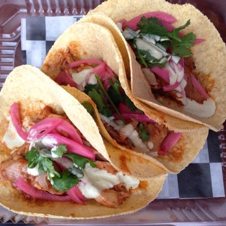

Tacos

Description
Tacos are the national dish of Mexico, dating back to the Mexican silver mines of the 18th century, when the word taco referred to gunpowder that was wrapped in a piece of paper and inserted into rocks. It was used to excavate the precious ore from mines and was called tacos de minero or miner's tacos. Today, the word is widely known to signify the leading street food and fast food item in Mexico – thin, flat griddle-baked tortillas topped with numerous fillings, folded and eaten without any utensils.
Ingredients
- 18 medium taco shells.
- 2 pounds lean ground beef
- 1 (14 ounce) bottle ketchup
- 1 (8 ounce) package shredded Cheddar cheese
- 1 large tomato, diced
- 1 cup iceberg lettuce, shredded
Directions
- Preheat oven to 375 degrees F (190 degrees C).
- Warm taco shells for 5 minutes on the center rack in the preheated oven.
- In a medium skillet over medium high heat, brown the beef. Halfway through browning, pour in ketchup. Stir well and let simmer for 5 minutes.
- Spoon the meat mixture into the warm taco shells and top with Cheddar cheese. Return the filled taco shells to the preheated oven and bake until cheese is melted. Top each taco with a little tomato and lettuce.